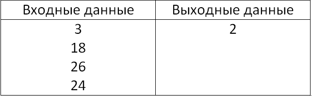
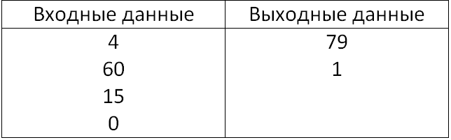

Задание №15 на мой взгляд не самое сложное, как привыкли думать ребята, сдающие информатику. В задании ученику представлен выбор, решать номер с Исполнителем Робот(15.1) или написать программу(15.2). Выбор на самом деле неоднозначный, Робот наверно будет проще, но я настоятельно рекомендую решать номер 15.2, так как основы программирования знать более полезно.
Если вы собрались решать номер с Роботом, то будьте очень внимательным, так как задание довольно кропотливое, легко запутаться. Однако если вы хорошо понимаете как работают циклы и сам алгоритм решения, то проблем с этим заданием быть просто не должно.
Одноко если вы всё же решили, что на экзамене будете писать программу, то советую делать это очень ответственно.
Во первых, если вы собираетесь в 11 класс, то навык, который вы нарабатывали ранее вам очень сильно поможет. Во вторых, если отнестись несерьёзно к этому, то в случае, если у вас попадётся необычная задачка на экзамене, вы с огромной вероятностью её не выполните, так как в таких случаях можно выкарабкаться только с помощью понимания языка программирования и всех его составляющих.
Напишите программу, которая в последовательности натуральных чисел определяет количество чисел, кратных 6. Программа получает на вход количество чисел в последовательности, а затем сами числа. В последовательности всегда имеется число, кратное 6.

Обычно на экзамене попадаются всего несколько типов этой задачи. Это на мой взгляд самый элементарный.
Задачи такого типа можно разбить на шаги. Запись переменных(1)...цикл(2)...условие из задачки(3)...вывод(4). Для такой задачи это будет выглядеть таким образом
var a, s, k, b: integer; (1)
begin
s:=0;
readln(a);
for k:=1 to a do (2)
begin
readln(b);
if (b mod 6 = 0) then
s:=s+1:
end; (3)
writeln(s);
end.(4)
Программа создаёт цикл из такого кол-ва чисел, сколько будет введено, проверяет делится ли введённое число на 6, и в случае, если да, то приплюсовывает единицу к ответу.
Второй тип задачки как по мне более интересный, но с ним почему то возникает немало проблем у ребят.
Напишите программу, которая в последовательности целых чисел определяет их сумму и количество чётных чисел, кратных 5. Программа получает на вход целые числа, количество введённых чисел неизвестно, последовательность чисел заканчивается числом 0 (0 — признак окончания ввода, не входит в последовательность). Количество чисел не превышает 1000. Введённые числа по модулю не превышают 30 000. Программа должна вывести два числа: сумму последовательности и количество чётных чисел, кратных 5.

Для решения подобных тоже можно составить алгоритм. Запись переменных(1)...цикл(2)...условие из задачки(3)...вывод(4). Абсолютно ничем не отличается от предыдущего, только в этой задаче двойное условие и наверно самая главная причина почему такие задачи не любят - это цикл while.
var s, b, n: integer;
begin
s := 0; n:= 0;
readln (b)
while b<>0 do begin
s := s + b;
if (b mod 2=0) and (b mod 5=0)
then n:= n + 1; readln(b);
end;
writeln(s);
writeln(n)
end.
Данная программа создаёт цикл из такого кол-ва чисел, сколько будет введено, если число больше нуля, то это значение приплюсовывается к значению первого ответа, потом проверяет делится ли число на 2 и на 5, и в случае если да то программа считает сколько таких чисел было и выводит во второй ответ.
Если хорошо понимать как решать хотя бы эти 2 вида 15.2, то спокойно можно выбирать данный номер на экзамене. Но практика в этом номере никогда не помешает, чем больше понимания, тем лучше.